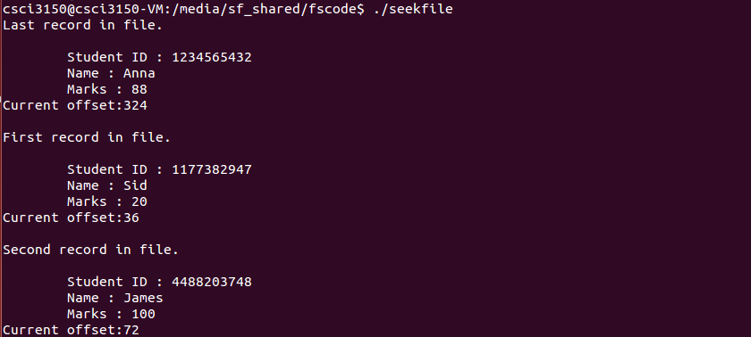

Getting data using fseek
If you have many records inside a file and need to access a record at a specific position, how would you do? An easier way to get to the required data can be achieved using fseek(). fseek() let you "random access" a file. During file I/O, a long integer called offset is used to keep track of the next byte to read or write. Offset represents the number of bytes from the beginning of the file to that next character. Random access I/O is achieved by changing the value of offset using the fseek(). You can look up the manual page of fseek() to see more details.
int fseek(FILE *stream, long offset, int whence);
The fseek() function sets the file position indicator for the stream pointed to by stream. The new position, measured in bytes, is obtained by adding offset bytes to the position specified by whence. "whence" can be set as the following values.
| Value | Description |
| SEEK_SET | Seek from the start of file |
| SEEK_CUR | Seek from the current location |
| SEEK_END | Seek from the end of file |
seekfile.c is an example about how to random access file. File "student.dat" is a binary file that contains many records of students. We use fseek(-) to access the record we want.
/*seekfile.c*/
#include<stdio.h>
#include<stdlib.h>
struct Student{
char sid[11];
char name[20];
int marks;
};
int main(int argc, char * argv[]){
FILE * fp;
int offset;
struct Student stu;
int i=0;
fp = fopen("student.dat","rb");
if(fp == NULL){
perror("fopen\n");
exit(EXIT_FAILURE);
}
printf("Last record in file.\n");
offset = -(sizeof(stu));
fseek(fp,offset,SEEK_END);
fread(&stu,sizeof(stu),1,fp);
printf("\n\tStudent ID : %s",stu.sid);
printf("\n\tName : %s",stu.name);
printf("\n\tMarks : %d",stu.marks);
printf("\nCurrent offset:%ld",ftell(fp));
printf("\n\nFirst record in file.\n");
fseek(fp,0,SEEK_SET);
fread(&stu,sizeof(stu),1,fp);
printf("\n\tStudent ID : %s",stu.sid);
printf("\n\tName : %s",stu.name);
printf("\n\tMarks : %d",stu.marks);
printf("\nCurrent offset:%ld",ftell(fp));
printf("\n\nSecond record in file.\n");
fseek(fp,0,SEEK_CUR);
fread(&stu,sizeof(stu),1,fp);
printf("\n\tStudent ID : %s",stu.sid);
printf("\n\tName : %s",stu.name);
printf("\n\tMarks : %d",stu.marks);
printf("\nCurrent offset:%ld",ftell(fp));
fclose(fp);
return 0;
}

You can use the following program creat_data.c to generate your own "student.dat" file.
/*creat_data.c*/
#include <stdlib.h>
#include <stdio.h>
struct Student{
char sid[11];
char name[20];
int marks;
};
int main(int argc, char * argv[]){
int i=9;
struct Student stu;
FILE * fp;
fp = fopen("student.dat","wb");
while((i--)>0){
printf("Student ID(10 digits):\n");
scanf("%s",stu.sid);
printf("Student Name:\n");
scanf("%s",stu.name);
printf("Marks:\n");
scanf("%d",&stu.marks);
fwrite(&stu,sizeof(struct Student),1,fp);
}
fclose(fp);
return 0;
}